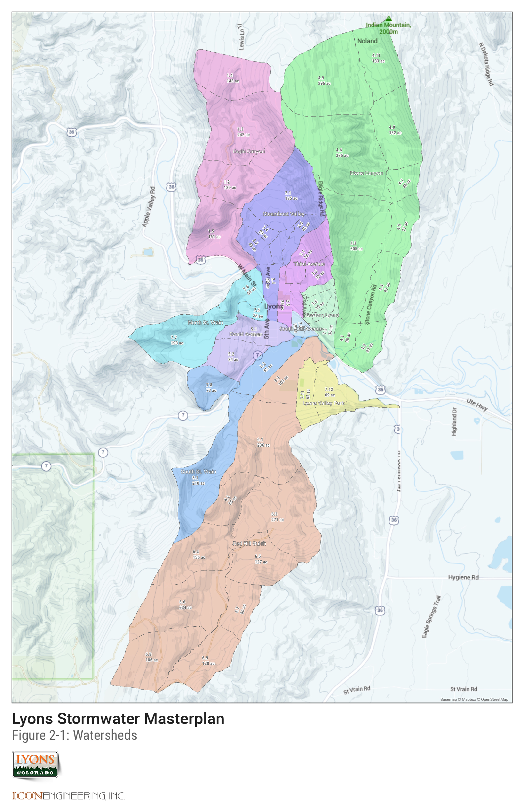

2.0 Study Area Description
2.1 Project Area
The project area includes the subbasins tributary to the North Saint Vrain Creek, South Saint Vrain Creek, Red Hill Gulch, and Stone Canyon within the Town of Lyons. The total drainage area studied is approximately 8.6 square miles.
Existing drainage in the Town reflects open channel drainageways in combination with storm sewer conveyance for more urbanized areas. Most of the Town's existing drainage infrastructure is undersized due to the increase in development within the Town during the 1990s. The existing conveyance system has the capacity to convey nuisance flows, but it does not have the capacity to convey even the minor (5-year) storm events.
At the time of this report, there are current requests for study and analysis of potential annexation areas adjacent to the current town limits. These areas were identified for study after the completion of the stormwater inventory and hydrologic analysis. However, this study has provided some limited information relative to adjacent areas.
 Figure 2-1: Watersheds Map
2.2 Land Use
The study area watershed is comprised of a combination of Hydrologic Soil Group (HSG) A, B, C, and D soils as classified by the Natural Resources Conservation Service (NRCS). These soil types are very intermixed with HSG A soils (i.e. soils with increased hydrologic conductivity) covering areas such as downtown locations, and north-south along the eastern basin limits. HSG B soils cover the least area in the watershed, with locations predominately along Saint Vrain Creek, and north and south branches. HSG C soils are represented along a north-south plane, along the easternmost portions of the watershed. Finally, HSG D soils (i.e. soils with the least potential for hydrologic conductivity) represent the greatest are of the watershed and are predominately located towards the northern and western watershed limits, covering rock outcrops and other less permeable sources.
It should be noted that for the study area, the HSG A soils are colluvial land type soil. According to the colluvial land soil description, the depth to restrictive feature is 2 to 60 inches to lithic bedrock. Because of the underlying bedrock, it was assumed that the HSG A soils would have the drainage characteristics of HSG B soils.
Land use was determined by compiling information from the 2009 Zoning District Map, 2010 Lyons Planning Area Map, and by ground-truthing the land cover based on an October 2015 aerial image of the watershed. Each land use category was assigned a percent imperviousness with guidance from Chapter 6 – Runoff of the UDFCD Urban Storm Drainage Criteria Manual. Table 2-1 outlines the land use categories and the corresponding percent imperviousness. In addition to the land use categories found in Table 2-1, Boulder County Open Space land use represented a significant portion of the watershed. Table 2-2 displays the soil types used to calculate imperviousness for the Boulder County Open Space land use category.
Table 2-1: Land Use Description
| Land Use Category | UDFCD Equivalent | Imperviousness |
|---|---|---|
| Agriculture | Undeveloped: Greenbelts, agricultural | 2% |
Table 2-2: Soil Types Found in Boulder County Open Space Land Use Category
| Soil Unit | HSG | Soil Type | Drainage Class | Runoff Class | Rock Outcrop | Imperviousness |
|---|---|---|---|---|---|---|
| MdB | A | sandy loam | well | very low | 2% | |
It should be noted that land use category corresponds to the 2010 Lyons Planning Area Map. However, in some cases, the planning description and corresponding lot size were not representative of what is observed through aerial imagery and field reconnaissance. In these cases, the imperviousness percentages were revised to be more representative of what was observed.
Future imperviousness was determined by comparing the land use in the 2010 Lyons Planning Area Map to current aerial imagery, and noting which areas of the Town could be further developed based on the planning guidance.
2.3 Outfall Descriptions
The study area has been divided into eleven separate outfalls based on their general drainage patterns. A description of each outfall can be found below with an outfall map found in XXX .
2.3.1 Eagle Canyon
The Eagle Canyon watershed, with a tributary area of 740 acres, is located west of downtown Lyons. The drainage path for the watershed is a steep mountain channel with an approximate slope between 5% and 35%. The channel flows south before turning east near Eagle Canyon Subdivision before draining into the North St. Vrain Creek. The watershed ranges in elevation from 6670 feet to 5390 feet. The majority of the watershed is undeveloped or large lot residential with the exception of the Eagle Canyon Subdivision. The Eagle Canyon Subdivision drains to the southeast into an existing detention basin.
2.3.2 Eastern Lyons
The Eastern Lyons Watershed is generally bounded by 2nd Avenue to the west and Stone Canyon Watershed to the east. The watershed ranges in elevation from 5850 feet to 5300 feet. The 87 acre watershed conveys flow southwest to the 2nd Avenue and Main Street intersection. An existing storm drain intercepts flow from the new development along 1st Avenue discharging onto the street on 2nd Avenue. Flow within the Eastern Lyons Watershed is conveyed along the east side of 2nd Avenue in a small roadside swale. Any flows exceeding the capacity of this swale that overtop 2nd Avenue have the possibility of spilling into the Third Avenue Watershed. A small, 18-inch, storm drain intercepts minor flows north of Main Street and conveys flow through the shopping center along Main Street. The storm drain crosses Main Street discharging into an open channel in the South 2nd Avenue Watershed before discharging into St. Vrain Creek.
During the course of this study, the Colorado Department of Transportation initiated a roadway and storm drainage improvements along Main Street in the vicinity of 2nd Avenue. The as-built documents were not available at the time of the hydraulic analysis, but an estimated version of the storm drain system in that area was used in the study.
2.3.3 Ewald Ave
The Ewald Avenue Watershed originates southwest of the North and South St. Vrain Creek confluence. The 160 acre watershed ranges in elevation from 5875 feet to 5320 feet. Unlike the other major watersheds, the Ewald Avenue Watershed does not have a defined channel flow path. The runoff from this watershed is primarily sheet flow along the steep hillsides northeast towards the residential developments. The hillside in the upper reaches of the watershed has an approximately slope of 15 percent. In the developed portion of the watershed the slope is approximately six percent. The majority of conveyance is through the residential street with the exception of a 48 inch reinforced concrete storm drain pipe installed along Park Street from 4th Avenue to North St. Vrain Creek.
2.3.4 Lyons Valley Park
Located south of St. Vrain Creek, the Lyons Valley Park Watershed is primarily medium residential lots. The watershed ranges in elevation from 5860 feet to 5260 feet. The runoff from the 210 acre watershed is conveyed northeast through the subdivision to St. Vrain Creek. There is no defined flow path through the watershed as flow is primarily conveyed down McConnell Drive. There is an 18-inch reinforced concrete storm drain system on Bohn Court, Noland Court, and Estes Court. Curb side combination inlets capture stormwater in these areas. The system is upsized to a 30-inch reinforced concrete pipe at McConnell Drive before the flow is discharged into the St. Vrain Creek.
2.3.5 North St. Vrain
The North St. Vrain Creek Watershed is a combination of several subwatersheds that are directly tributary to North St. Vrain Creek. There are both left and right bank tributaries with subwatersheds ranging in size from 20 acres to 190 acres. The watersheds vary in land use including dense residential, commercial, open space, and undeveloped areas.
2.3.6 Red Hill Gulch
The Red Hill Gulch Watershed is located on the south side of the St. Vrain Creek ranging in elevation from 6800 feet to 5300 feet. The runoff from this 1560 acre watershed is conveyed in the upper reaches by an open channel with an average slope of 5 to 20 percent. The channel generally follows Red Gulch Road north before flows exit the mountainous terrain and enters a broad alluvial valley. The runoff continues north where flows are intercepted by South Ledge Ditch. Any flows exceeding the capacity of the South Ledge Ditch will overtop the ditch and continue north. Due to the limited capacity of the irrigation ditch, major storm events have the possibility of conveying a large volume of water north into Bohn Park and Lyons Valley Park Subdivision. The average slope of the overflow path downstream of the South Ledge Ditch is approximately two percent.
2.3.7 South St. Vrain
The South St. Vrain Creek is a combination of several subwatersheds that are directly tributary to South St. Vrain Creek. These subwatersheds are both left and right bank tributaries to the South St. Vrain Creek ranging in size from 70 acres to 210 acres. The development throughout the watershed varies from undeveloped to large lot residential.
2.3.8 South 2nd Avenue
The South 2nd Avenue Watershed is bounded by 3rd Avenue to the west, Main Street to the north and east and the St. Vrain Creek to the south. The approximately 20 acre watershed drains southeast ranging in elevation from 5360 feet to 5310 feet. A combination 24-inch storm drain and open channel system conveys flow along the south side of Main Street discharging into St. Vrain Creek. An 18-inch storm drain conveys flow south from the Park Street and 2nd Avenue intersection into St. Vrain Creek.
2.3.9 Steamboat Valley
The Steamboat Valley watershed is located directly north of downtown, bounded by the Eagle Canyon Watershed to the west and to the east by the Third Avenue and Stone Canyon Watersheds. The majority of the 370 acre watershed converges just upstream of downtown and is conveyed between 4th and 5th Avenue. In the upper reaches, the watershed consists of large lot residential and undeveloped properties. The lower third of the watershed is fully developed consisting of residential and commercial lots. In the lower downtown area the watershed is bounded by 4th Avenue to the east and North St. Vrain Creek to the west. The watershed ranges in elevation from 6520 feet to 5335 feet.
The flow concentrates in the upper reaches in an open channel with an approximate slope of 16 percent. The flow continues south into a private inadvertent storage area on the Russell property upstream of the old railroad embankment. Downstream of the railroad embankment the drainageway is confined in a small open channel that conveys flow through backyards of private property. There are several roadway crossings within this reach including Vasquez Road, McCall Alley, Reese Avenue, Steward Avenue, and Stickney Avenue. A reportedly historic stone box culvert intercepts flow and conveys flow underneath downtown until the outfall location into North St. Vrain Creek. The slope is approximately four percent downstream of the railroad embankment.
An 18-inch reinforced concrete storm drain pipe collects flow along 5th Street south of Main Street to Park Drive. This pipe increases in size just downstream of Park Drive to a 28-inch by 16-inch reinforced concrete elliptical pipe before discharging to North St. Vrain Creek.
Along 4th Avenue an 18-inch reinforced concrete storm drain pipe intercepts flow at Stickney Avenue and conveys the flow south to Railroad Avenue. At Railroad Avenue the storm drain increases in size to a 24-inch reinforced concrete storm drain pipe continuing south to the outfall location into North St. Vrain Creek.
2.3.10 Stone Canyon
The Stone Canyon Watershed is located east of the Third Avenue and Eastern Lyons Watersheds. In the upper reaches, the 1550 acre watershed is dominated by large residential and undeveloped properties. The open channel which conveys the majority of the runoff for the Stone Canyon watershed has an average slope of approximately four percent. The watershed ranges in elevation from 6580 feet to 5294 feet.
The open channel drainageway passes through multiple roadway crossings within Boulder County. Within the Town of Lyons, Stone Canyon is conveyed underneath Stone Canyon Road through a 13 foot by 8 foot reinforced concrete box culvert. The drainage path continues south where flow is conveyed underneath Ute Highway through an 8 foot by 4 foot reinforced concrete box culvert into St. Vrain Creek.
2.3.11 Third Avenue
The Third Avenue watershed, approximately 170 acres, conveys flow southwest into the downtown area along Third Avenue. The watershed is undeveloped upstream of the downtown area bounded by Steamboat Valley to the west and Eastern Lyons and Stone Canyon. The watershed ranges in elevation from 6260 feet to 5320 feet. Development within the lower portions of the watershed is dominated by residential and commercial development. The watershed discharges flow into North St. Vrain Creek just upstream of the confluence with South St. Vrain Creek.
An existing 5 foot x 4 foot elliptical pipe conveys flow underneath Main Street at Third Avenue into the South 2nd Avenue Watershed.